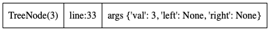
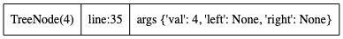
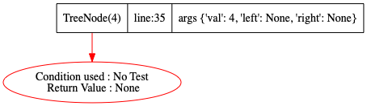
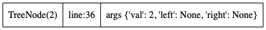
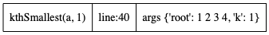

class TreeNode:
def __init__(self, val=0, left=None, right=None):
self.val = val
self.left = left
self.right = right
def __str__(self):
s = str(self.val)
if self.left:
s = str(self.left) + " "+s
if self.right:
s += " " + str(self.right)
return s
def __repr__(self):
return self.__str__()
def __eq__(self,other):
return self.__str__() == other.__str__()
def kthSmallest(root, k):
head = root # watchvar btree:left:right:val head
stack = [] # watchvar ref:head:btree root
while root or stack:
while root:
stack.append(root)
root = root.left
root = stack.pop()
k -= 1
if k == 0:
return root.val
root = root.right
def go():
# https://leetcode.com/problems/kth-smallest-element-in-a-bst/
a = TreeNode(3)
b = TreeNode(1)
c = TreeNode(4)
d = TreeNode(2)
a.left = b
b.right = d
a.right = c
kthSmallest(a,1)
Step:1,New function call at Line:33
Code executed: a = TreeNode(3)
Stack Trace generated

Step:2,Return seen at Line:5
Code executed: self.right = right
Stack Trace generated
Step:3,New function call at Line:34
Code executed: b = TreeNode(1)
Stack Trace generated
Step:4,Return seen at Line:5
Code executed: self.right = right
Stack Trace generated
Step:5,New function call at Line:35
Code executed: c = TreeNode(4)
Stack Trace generated

Step:6,Return seen at Line:5
Code executed: self.right = right
Stack Trace generated

Step:7,New function call at Line:36
Code executed: d = TreeNode(2)
Stack Trace generated

Step:8,Return seen at Line:5
Code executed: self.right = right
Stack Trace generated
Step:9,New function call at Line:40
Code executed: kthSmallest(a,1)
Stack Trace generated

Step:10,Return seen at Line:29
Code executed: return root.val
Stack Trace generated